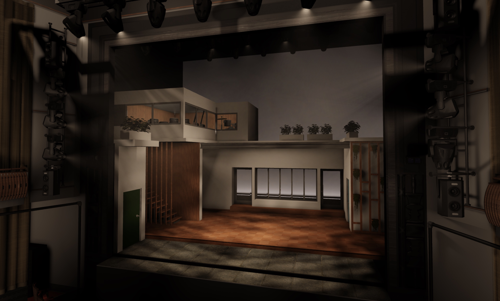
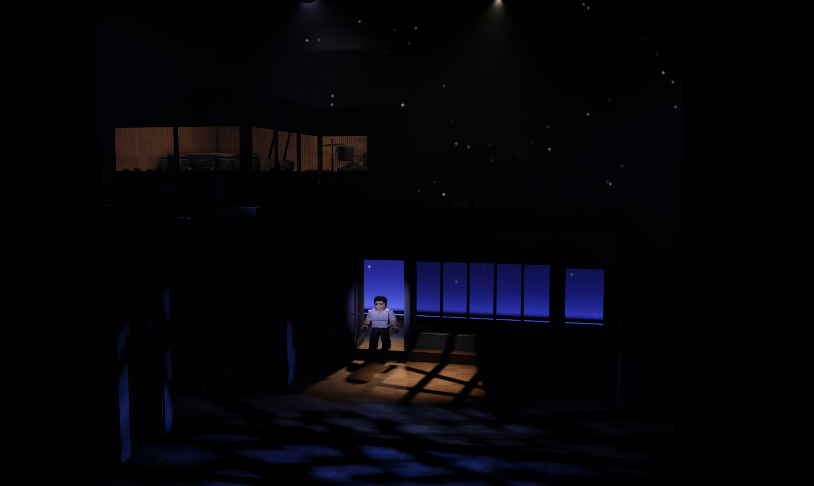
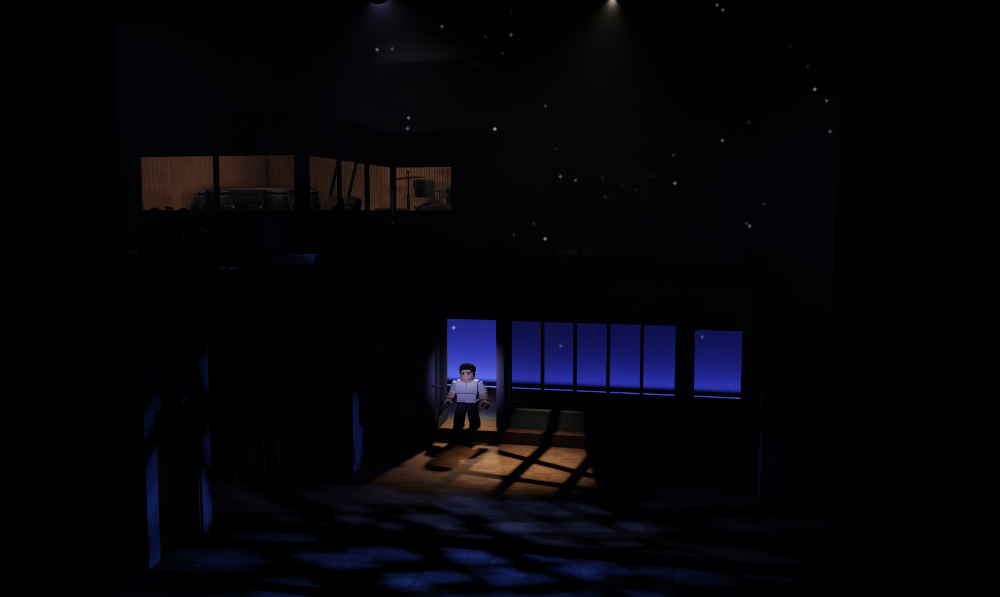

8.15
2 Creations
Please note: nothing listed in this section is for sale. If you are looking to purchase something, see Products.
2.1 Theatre
I have created several Roblox-recreations of musicals, sometimes with original designs and sometimes replica productions.
2.1.1 Merrily We Roll Along
I recreated the 2023 Broadway production of Merrily We Roll Along on Roblox, replicating the set and lighting for the opening number of the show.
The auditorium pictured in this image was created by @LowenBird.



Actors are not wearing costumes; their outfits are not indicative of the production.

Actors are not wearing costumes; their outfits are not indicative of the production.
2.1.2 Cabaret
I designed a minimalist production of the opening number of Cabaret, "Wilkommen", on Roblox. The lighting and set design are entirely original.
The production has been updated since the current archival recording was made; a newer recording may be released in the future.An archival recording of the show is available here.
Actors are not wearing costumes; their outfits are not indicative of the production.
2.1.3 Sweeney Todd
Inspired by the 2023 Broadway Production, I created a semi-original production of Act 1 of Sweeney Todd: The Demon Barber of Fleet Street on Roblox.
A recording of the opening number is available here.
Costume design by @realitytim.
2.1.4 Other Works
Other Roblox productions I have created are listed below. There are varying reasons why each does not have its own section: some are not in a presentable state, some are not up to my current standard of work, and there are other complicating circumstances surrounding the rest.
Next to Normal
MJ
Be More Chill
Dear Evan Hansen
Hadestown
2.2 Games
I have created many games on Roblox, some more ambitious than others. Not all of them are listed here, and I intend to add more to this page eventually. For now, I believe the following list is diverse enough to show you the range of what I’ve created.
2.2.1 Sword Fight and Flex Your Time
Description: Sword-fighting game where players gain "time" for being outside the safe zone. When you kill another player, you gain their time, and their time resets to 0. Complete different quests to earn overhead tags, spend time on crates to unlock rare swords, and if you accumulate enough time, you earn a place on the global leaderboard.
2.2.2 Twinqle Facilities
Description: Facility with many dynamic, random chance minigames used to host giveaways and competitions.
Link: Twinqle Facilities
2.2.3 king of the hill
Description: Stand on the top of the large hill to gain time. Use your hammer to knock other players off the hill so they do not gain time. The player with the most time in the server gets a crown, and you can spend time to buy unique skins for your hammer.
Link: king of the hill
2.2.4 The 36
Description: Based on the movie Circle, 36 anonymous players stand in a circle and take turns voting on who should be eliminated. Even if you play with your friends, you’ll have no idea who is who.
Link: The 36
2.2.5 Tag
Description: Simple tag game where one player is selected as the tagger and has a certain amount of time to find and tag the other players. The players can pick up temporary speed boosts, and the tagger can use temporary X-ray vision.
This game is open-sourced! You can access its source by clicking the three dots on the game page and then clicking "Edit".
Link: Tag